pacman::p_load(tidyverse, ggstatsplot, ggridges, plotly,
patchwork, scales, paletteer, viridis,
ggiraph, ggiraphExtra, gganimate, ggmosaic,
gifski, ggpubr, ggdist, ggrain, GGally,
qqplotr, gt, ggpmisc,haven, webr,
transformr, Hmisc, vcd, knitr,
kableExtra, DT, rstatix)Take Home Exercise 1
Creating Data Visualization Beyond Default
Setting the Scene
OECD education director Andreas Schleicher shared in a BBC article that “Singapore managed to achieve excellence without wide differences between children from wealthy and disadvantaged families.” (2016) Furthermore, several Singapore’s Minister for Education also started an “every school a good school” slogan. The general public, however, strongly belief that there are still disparities that exist, especially between the elite schools and neighborhood school, between students from families with higher socioeconomic status and those with relatively lower socioeconomic status and immigration and non-immigration families.
Our Task
The 2022 Programme for International Student Assessment (PISA) data was released on December 5, 2022. PISA global education survey every three years to assess the education systems worldwide through testing 15 year old students in the subjects of mathematics, reading, and science.
In this take-home exercise, we are required to use appropriate Exploratory Data Analysis (EDA) methods and ggplot2 functions to reveal:
the distribution of Singapore students’ performance in mathematics, reading, and science, and
the relationship between these performances with schools, gender and socioeconomic status of the students.
The Data
Our data will be obtained from the PISA 2022 Database which contains a full set of responses from individual students, school principles, and parents. There are a total of five data files available but we will only be using the Student Questionnaire Data File.
1: Data Preparation
1.1 Installing R packages
We will be using the function pacman::p_load from the pacman package to install and call off multiple libraries from various R packages:
1.2 Filtering the Data
As mentioned earlier, the Student Questionnaire Data File will be used for our analysis, however further filtering will need to be done as our main focus will be on Singapore. The following code chunk below filters the original dataset according to entries from Singapore only and outputs a separate file titled: stu_qqq_SG
The Code
stu_qqq <- read_sas("Data/cy08msp_stu_qqq.sas7bdat")stu_qqq_SG <- stu_qqq %>%
filter(CNT =="SGP")write_rds(stu_qqq_SG,
"Data/stu_qqq_SG.rds")stu_qqq_SG <- read_rds("Data/stu_qqq_SG.rds")Summary Statistics of the Filtered Dataset: stu_qqq_SG
head(stu_qqq_SG,10)# A tibble: 10 × 1,279
CNT CNTRYID CNTSCHID CNTSTUID CYC NatCen STRATUM SUBNATIO REGION OECD
<chr> <dbl> <dbl> <dbl> <chr> <chr> <chr> <chr> <dbl> <dbl>
1 SGP 702 70200052 70200001 08MS 070200 SGP01 7020000 70200 0
2 SGP 702 70200134 70200002 08MS 070200 SGP01 7020000 70200 0
3 SGP 702 70200112 70200003 08MS 070200 SGP01 7020000 70200 0
4 SGP 702 70200004 70200004 08MS 070200 SGP01 7020000 70200 0
5 SGP 702 70200152 70200005 08MS 070200 SGP01 7020000 70200 0
6 SGP 702 70200043 70200006 08MS 070200 SGP01 7020000 70200 0
7 SGP 702 70200049 70200007 08MS 070200 SGP01 7020000 70200 0
8 SGP 702 70200107 70200008 08MS 070200 SGP01 7020000 70200 0
9 SGP 702 70200012 70200009 08MS 070200 SGP01 7020000 70200 0
10 SGP 702 70200061 70200010 08MS 070200 SGP01 7020000 70200 0
# ℹ 1,269 more variables: ADMINMODE <dbl>, LANGTEST_QQQ <dbl>,
# LANGTEST_COG <dbl>, LANGTEST_PAQ <dbl>, Option_CT <dbl>, Option_FL <dbl>,
# Option_ICTQ <dbl>, Option_WBQ <dbl>, Option_PQ <dbl>, Option_TQ <dbl>,
# Option_UH <dbl>, BOOKID <dbl>, ST001D01T <dbl>, ST003D02T <dbl>,
# ST003D03T <dbl>, ST004D01T <dbl>, ST250Q01JA <dbl>, ST250Q02JA <dbl>,
# ST250Q03JA <dbl>, ST250Q04JA <dbl>, ST250Q05JA <dbl>, ST250D06JA <chr>,
# ST250D07JA <chr>, ST251Q01JA <dbl>, ST251Q02JA <dbl>, ST251Q03JA <dbl>, …There are a total of 6,066 rows and 1,279 variables available in our dataset.
stu_qqq_SG[duplicated(stu_qqq_SG),]# A tibble: 0 × 1,279
# ℹ 1,279 variables: CNT <chr>, CNTRYID <dbl>, CNTSCHID <dbl>, CNTSTUID <dbl>,
# CYC <chr>, NatCen <chr>, STRATUM <chr>, SUBNATIO <chr>, REGION <dbl>,
# OECD <dbl>, ADMINMODE <dbl>, LANGTEST_QQQ <dbl>, LANGTEST_COG <dbl>,
# LANGTEST_PAQ <dbl>, Option_CT <dbl>, Option_FL <dbl>, Option_ICTQ <dbl>,
# Option_WBQ <dbl>, Option_PQ <dbl>, Option_TQ <dbl>, Option_UH <dbl>,
# BOOKID <dbl>, ST001D01T <dbl>, ST003D02T <dbl>, ST003D03T <dbl>,
# ST004D01T <dbl>, ST250Q01JA <dbl>, ST250Q02JA <dbl>, ST250Q03JA <dbl>, …From the output, there are no duplicated rows found in our dataset.
1.3 Further Filtering of Dataset
In the earlier section, we filtered our dataset to only show results from Singapore. However, there are still 1,279 variables - most of which that will not be required or used in our analysis. Therefore, we will select 14 variables for our first cut. Using the code book from OECD as reference, we would be select the features listed below using the select function and write it into another file.
| Variable Column Names | Variable Labels | Column Number |
|---|---|---|
| CNTSTUID | Student ID | 4 |
| ST004D01T | Student (Standardized) Gender | 26 |
| EXERPRAC | Exercise or practice a sport before or after school | 979 |
| STUDYHMW | Studying for school or homework before or after school | 980 |
| WORKPAY | Working for pay before or after school | 981 |
| DURECEC | Duration in early childhood education and care | 987 |
| RELATST | Quality of student-teacher relationships (WLE) | 990 |
| MISCED | Mother’s level of education (ISCED) | 1030 |
| FISCED | Father’s level of education (ISCED) | 1031 |
| ICTAVSCH | Availability and Usage of ICT at School | 1051 |
| PV1MATH | Plausible Value 1 in Mathematics | 1167 |
| PV1READ | Plausible Value 1 in Read | 1177 |
| PV1SCIE | Plausible Value 1 in Science | 1187 |
| ESCS | Index of economic, social and cultural status | 1039 |
Preparing the New Dataset
The select function as shown in the code tab removes the unwanted variables (columns). This narrows down our dataset to the few variables selected.
Selecting the Variables to Keep
stu_qqq_SG_select_analysis <- stu_qqq_SG %>%
select(4,26,979:981,987,990,1030,1031,1039,1051,1167,1177,1187)Writing the Dataset into a Reading File Type
write_rds(stu_qqq_SG_select_analysis,
"Data/stu_qqq_SG_select_analysis.rds")Reading the New Dataset:
stu_qqq_SG_select_analysis <- read_rds("Data/stu_qqq_SG_select_analysis.rds")str(stu_qqq_SG_select_analysis)tibble [6,606 × 14] (S3: tbl_df/tbl/data.frame)
$ CNTSTUID : num [1:6606] 70200001 70200002 70200003 70200004 70200005 ...
..- attr(*, "label")= chr "Intl. Student ID"
$ ST004D01T: num [1:6606] 1 2 2 2 1 1 2 2 1 2 ...
..- attr(*, "label")= chr "Student (Standardized) Gender"
$ EXERPRAC : num [1:6606] 1 4 2 5 9 1 2 0 3 5 ...
..- attr(*, "label")= chr "Exercise or practice a sport before or after school"
$ STUDYHMW : num [1:6606] 4 7 3 5 7 10 0 10 5 3 ...
..- attr(*, "label")= chr "Studying for school or homework before or after school"
$ WORKPAY : num [1:6606] 0 0 0 6 0 0 0 0 0 0 ...
..- attr(*, "label")= chr "Working for pay before or after school"
$ DURECEC : num [1:6606] 3 2 NA 3 NA 4 3 NA NA 3 ...
..- attr(*, "label")= chr "Duration in early childhood education and care"
$ RELATST : num [1:6606] -0.261 1.244 0.719 -0.219 1.073 ...
..- attr(*, "label")= chr "Quality of student-teacher relationships (WLE)"
$ MISCED : num [1:6606] 8 7 4 6 7 7 6 9 8 8 ...
..- attr(*, "label")= chr "Mother’s level of education (ISCED)"
$ FISCED : num [1:6606] 7 7 4 6 7 9 2 8 8 7 ...
..- attr(*, "label")= chr "Father’s level of education (ISCED)"
$ ESCS : num [1:6606] 0.1836 0.8261 -1.0357 -0.9606 0.0856 ...
..- attr(*, "label")= chr "Index of economic, social and cultural status"
$ ICTAVSCH : num [1:6606] 7 7 7 7 5 6 7 6 7 6 ...
..- attr(*, "label")= chr "Availability and Usage of ICT at School"
$ PV1MATH : num [1:6606] 639 697 694 427 436 ...
..- attr(*, "label")= chr "Plausible Value 1 in Mathematics"
$ PV1READ : num [1:6606] 676 626 620 381 448 ...
..- attr(*, "label")= chr "Plausible Value 1 in Reading"
$ PV1SCIE : num [1:6606] 711 671 666 340 456 ...
..- attr(*, "label")= chr "Plausible Value 1 in Science"1.4 Changing Data Types
Based on the structure shown in Section 1.3, variables data types need to be corrected before we can correctly use them for analysis.
The table of variables below are classified as num which is for numerical continuous data. To correct to their respective data types, we will be using both as.character and as.factor . Click the next tab to view the code used.
| Character Variables | Factor Variables |
| CNTSTUID | ST004D01T |
| EXERPRAC | |
| STUDYHMW | |
| WORKPAY | |
| DURECEC | |
| RELATST | |
| MISCED | |
| FISCED | |
| ICTAVSCH |
stu_qqq_SG_select_analysis <- stu_qqq_SG_select_analysis %>%
mutate(CNTSTUID = as.character(CNTSTUID))
stu_qqq_SG_select_analysis <- stu_qqq_SG_select_analysis %>%
mutate(ST004D01T = as.factor(ST004D01T))
stu_qqq_SG_select_analysis <- stu_qqq_SG_select_analysis %>%
mutate(EXERPRAC = as.character(EXERPRAC))
stu_qqq_SG_select_analysis <- stu_qqq_SG_select_analysis %>%
mutate(STUDYHMW = as.character(STUDYHMW))
stu_qqq_SG_select_analysis <- stu_qqq_SG_select_analysis %>%
mutate(WORKPAY = as.character(WORKPAY))
stu_qqq_SG_select_analysis <- stu_qqq_SG_select_analysis %>%
mutate(DURECEC = as.character(DURECEC))
stu_qqq_SG_select_analysis <- stu_qqq_SG_select_analysis %>%
mutate(RELATST = as.character(RELATST))
stu_qqq_SG_select_analysis <- stu_qqq_SG_select_analysis %>%
mutate(MISCED = as.character(MISCED))
stu_qqq_SG_select_analysis <- stu_qqq_SG_select_analysis %>%
mutate(FISCED = as.character(FISCED))
stu_qqq_SG_select_analysis <- stu_qqq_SG_select_analysis %>%
mutate(ICTAVSCH = as.character(ICTAVSCH))This code here is to recode our gender variable for easier representation in plots for later sections.
stu_qqq_SG_select_analysis <- stu_qqq_SG_select_analysis %>%
mutate(ST004D01T=recode(ST004D01T,"1" = "Female","2"="Male"))str(stu_qqq_SG_select_analysis)tibble [6,606 × 14] (S3: tbl_df/tbl/data.frame)
$ CNTSTUID : chr [1:6606] "70200001" "70200002" "70200003" "70200004" ...
$ ST004D01T: Factor w/ 2 levels "Female","Male": 1 2 2 2 1 1 2 2 1 2 ...
$ EXERPRAC : chr [1:6606] "1" "4" "2" "5" ...
$ STUDYHMW : chr [1:6606] "4" "7" "3" "5" ...
$ WORKPAY : chr [1:6606] "0" "0" "0" "6" ...
$ DURECEC : chr [1:6606] "3" "2" NA "3" ...
$ RELATST : chr [1:6606] "-0.2606" "1.2437" "0.719" "-0.2194" ...
$ MISCED : chr [1:6606] "8" "7" "4" "6" ...
$ FISCED : chr [1:6606] "7" "7" "4" "6" ...
$ ESCS : num [1:6606] 0.1836 0.8261 -1.0357 -0.9606 0.0856 ...
..- attr(*, "label")= chr "Index of economic, social and cultural status"
$ ICTAVSCH : chr [1:6606] "7" "7" "7" "7" ...
$ PV1MATH : num [1:6606] 639 697 694 427 436 ...
..- attr(*, "label")= chr "Plausible Value 1 in Mathematics"
$ PV1READ : num [1:6606] 676 626 620 381 448 ...
..- attr(*, "label")= chr "Plausible Value 1 in Reading"
$ PV1SCIE : num [1:6606] 711 671 666 340 456 ...
..- attr(*, "label")= chr "Plausible Value 1 in Science"2: Visual Summary and Observations
Important
The following observations are based on surface level understanding of the data provided by the PISA survey. As this exercise is used for practice, do use the information below provided with a pinch of salt.
2.1 Distribution of PV Scores
The panel below displays the distribution of the three Plausible Value 1 (PV1) values that are being used in this study. The plots have been further split between both males and females to further understand distribution of these scores between both genders.
Based on the three distribution charts below, it can be observed that the distribution of PV1 values between both male and female are relatively similar. This does not provide sufficient insight for us to achieve the task that was set out in the beginning.
Note
Reminder of the Task at Hand:
the distribution of Singapore students’ performance in mathematics, reading, and science, and
the relationship between these performances with schools, gender and socioeconomic status of the students.
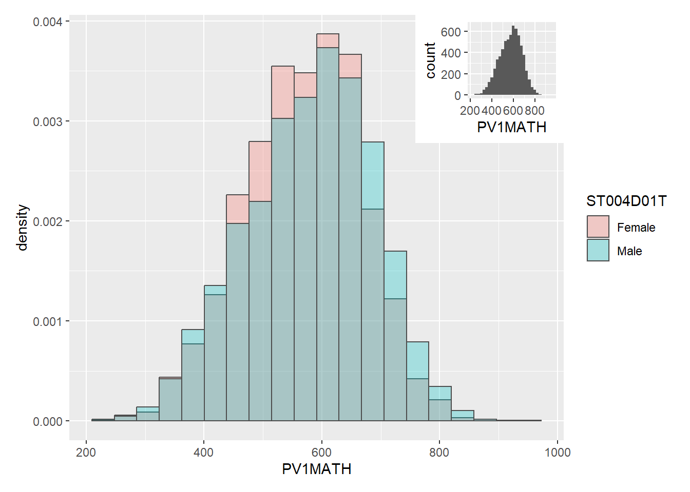
p1 <- ggplot(stu_qqq_SG_select_analysis,
aes(x= PV1MATH,
fill = ST004D01T)) +
geom_histogram(aes(y=..density..),
bins=20,
color="grey30",
position="identity",
alpha=0.3)
p2 <- ggplot(stu_qqq_SG_select_analysis,
aes(x=PV1MATH))+
geom_histogram()
(p1 + inset_element(p2,
left = 0.7,
bottom = 0.7,
right = 1,
top = 1))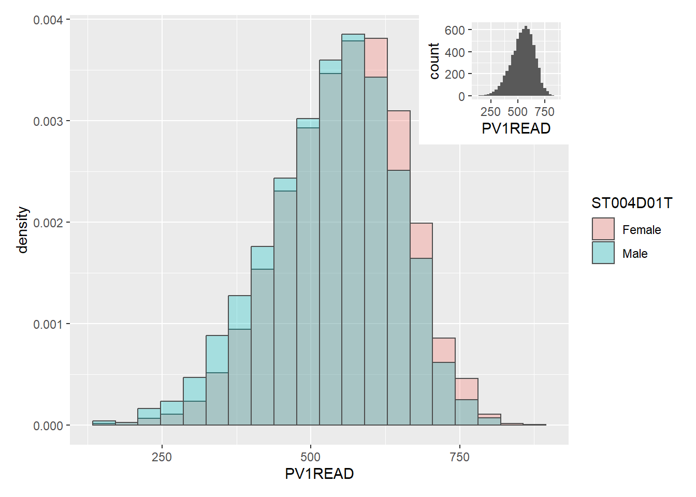
p1 <- ggplot(stu_qqq_SG_select_analysis,
aes(x= PV1READ,
fill = ST004D01T)) +
geom_histogram(aes(y=..density..),
bins=20,
color="grey30",
position="identity",
alpha=0.3)
p2 <- ggplot(stu_qqq_SG_select_analysis,
aes(x=PV1READ))+
geom_histogram()
(p1 + inset_element(p2,
left = 0.7,
bottom = 0.7,
right = 1,
top = 1))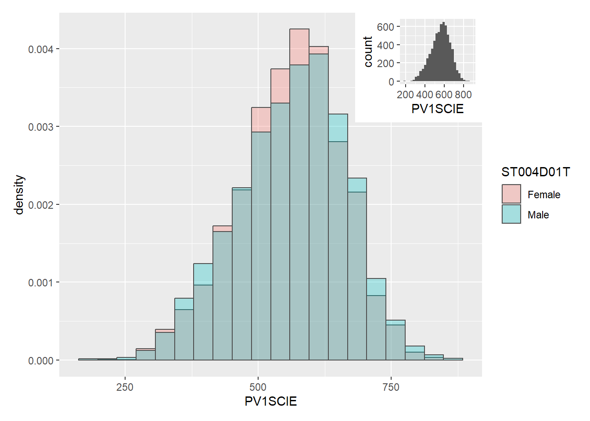
p1 <- ggplot(stu_qqq_SG_select_analysis,
aes(x= PV1SCIE,fill=ST004D01T)) +
geom_histogram(aes(y=..density..),
bins=20,
color="grey30",
position="identity",
alpha=0.3)
p2 <- ggplot(stu_qqq_SG_select_analysis,
aes(x=PV1SCIE))+
geom_histogram()
(p1 + inset_element(p2,
left = 0.7,
bottom = 0.7,
right = 1,
top = 1))2.2 Correlations between Socioeconimic Index (ESCS) and Plausible Values (PVs)
In this next section, a scatter plot is used to see if there is any correlation between the Socioeconomic Index (ESCS) and various PV1s in Math, Reading and Science.
Based on the three plots shown below, it can be deduced that the ESCS has a positive correlation with the PV scores. This means that the higher the economic, social and cultural status of the individual, the higher probability with reason that they would perform better for the PISA test.
The ESCS index provides a materialistic comparison between individuals and provides, at most, a good understanding of the individuals environment. However, this measure is not entirely accurate as there are various components involved that can be biased to the country itself.To properly understand the usefulness of ESCS and its correlation to the PVs, more information would need to be provided and analyzed in detail.
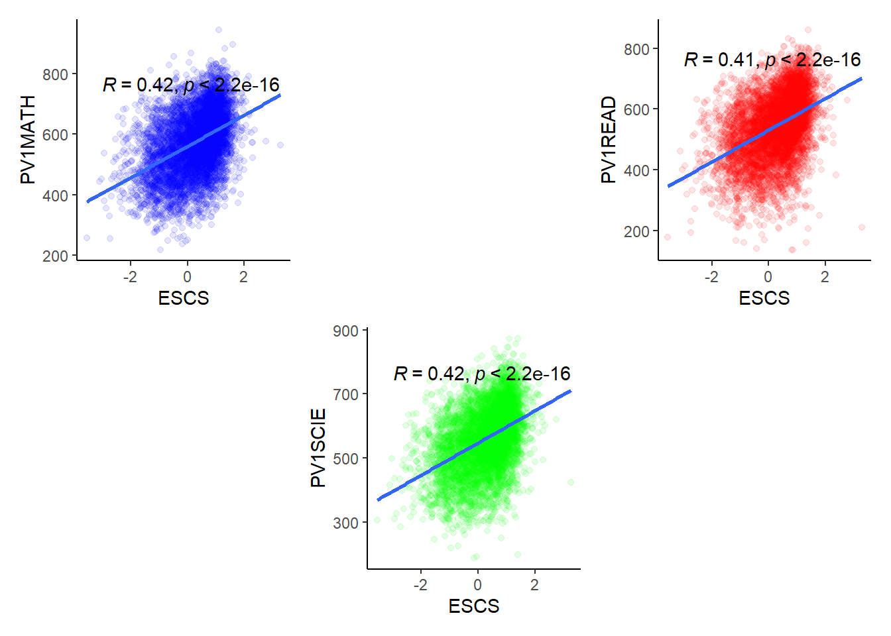
p1 <- ggplot(stu_qqq_SG_select_analysis,
aes(ESCS, PV1MATH))+
geom_point(alpha = 0.1, color ="blue")+
theme_classic()+
geom_smooth(method=lm,se=FALSE)+
stat_cor(method="pearson",label.x=-3, label.y=760)
p2 <- ggplot(stu_qqq_SG_select_analysis,
aes(ESCS, PV1READ))+
geom_point(alpha = 0.1, color ="red")+
theme_classic()+
geom_smooth(method=lm,se=FALSE)+
stat_cor(method="pearson",label.x=-3, label.y=760)
p3 <- ggplot(stu_qqq_SG_select_analysis,
aes(ESCS, PV1SCIE))+
geom_point(alpha = 0.1, color ="green")+
theme_classic()+
geom_smooth(method=lm,se=FALSE)+
stat_cor(method="pearson",label.x=-3, label.y=760)
p1 + plot_spacer() + p2 + plot_spacer() + p3 + plot_spacer()2.3 Distribution of Variables Categorized by Gender
In this next two section, various barplots and boxplots will be used to visualize the distribution of how each gender has answered in the PISA tests for various socioeconomic components. Based on this, we can then use it together with the next section in the hopes of obtaining better insight between perfomance and socioeconomic status.
Note
The following sections will use Math PV1 for all of its measures in performance as based on our earlier section, the distribution between the scores are similar between both male and female.
ggplot(stu_qqq_SG_select_analysis,
aes(x = EXERPRAC, fill=ST004D01T))+
geom_bar(position="dodge")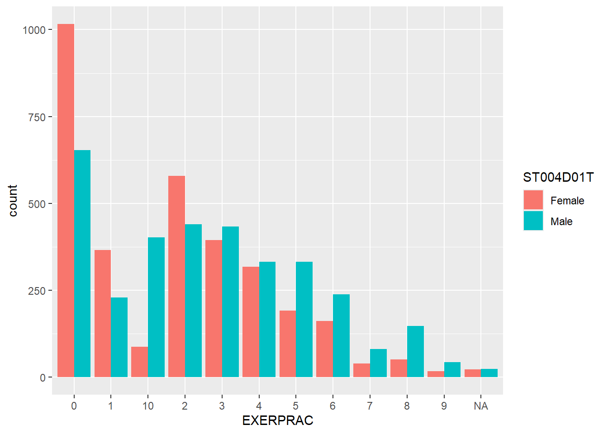
| Legend | Description |
|---|---|
| 0 | No exercise or sports |
| 1 | 1 time of exercising or sports per week |
| 2 | 2 time of exercising or sports per week |
| 3 | 3 time of exercising or sports per week |
| 4 | 4 time of exercising or sports per week |
| 5 | 5 time of exercising or sports per week |
| 6 | 6 time of exercising or sports per week |
| 7 | 7 time of exercising or sports per week |
| 8 | 8 time of exercising or sports per week |
| 9 | 9 time of exercising or sports per week |
| 10 | 10 or more times of exercising or sports per week |
ggplot(stu_qqq_SG_select_analysis,
aes(x = STUDYHMW, fill=ST004D01T))+
geom_bar(position ="dodge")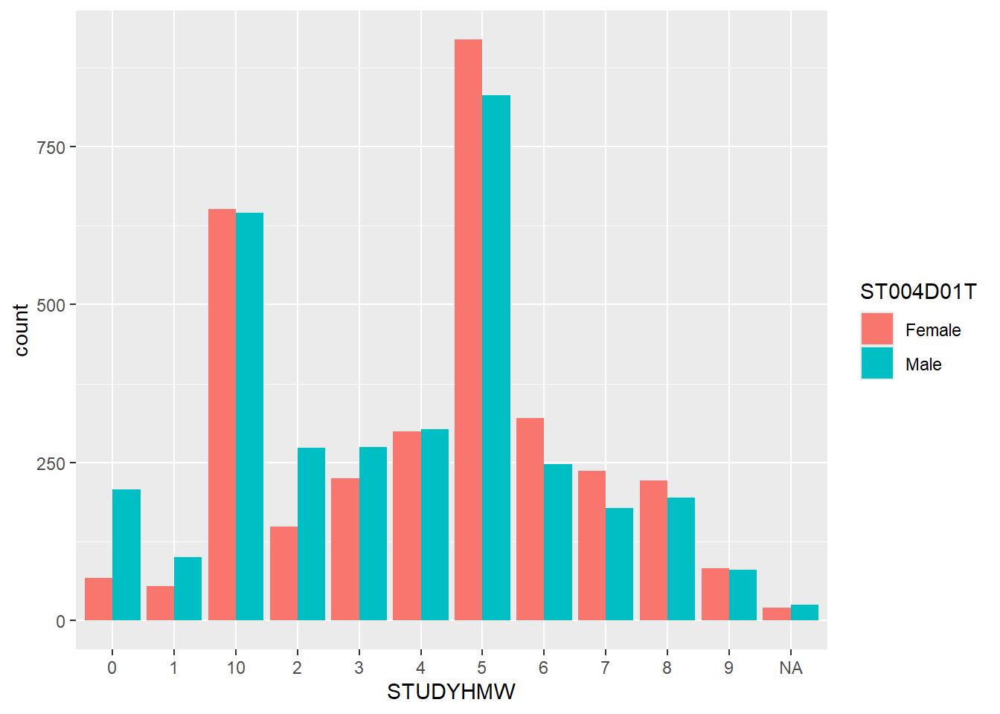
| Legend | Description |
|---|---|
| 0 | No studying |
| 1 | 1 time of studying per week |
| 2 | 2 times of studying per week |
| 3 | 3 times of studying per week |
| 4 | 4 times of studying per week |
| 5 | 5 times of studying per week |
| 6 | 6 times of studying per week |
| 7 | 7 times of studying per week |
| 8 | 8 times of studying per week |
| 9 | 9 times of studying per week |
| 10 | 10 or more times of study per week |
ggplot(stu_qqq_SG_select_analysis,
aes(x = WORKPAY, fill=ST004D01T))+
geom_bar(position ="dodge")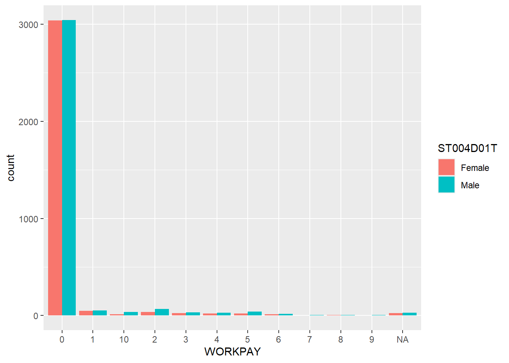
| Legend | Description |
|---|---|
| 0 | No work for pay |
| 1 | 1 time of working for pay per week |
| 2 | 2 times of working for pay per week |
| 3 | 3 times of working for pay per week |
| 4 | 4 times of working for pay per week |
| 5 | 5 times of working for pay per week |
| 6 | 6 times of working for pay per week |
| 7 | 7 times of working for pay per week |
| 8 | 8 times of working for pay per week |
| 9 | 9 times of working for pay per week |
| 10 | 10 or more times of working for pay per week |
ggplot(stu_qqq_SG_select_analysis,
aes(x = DURECEC, fill=ST004D01T))+
geom_bar(position ="dodge")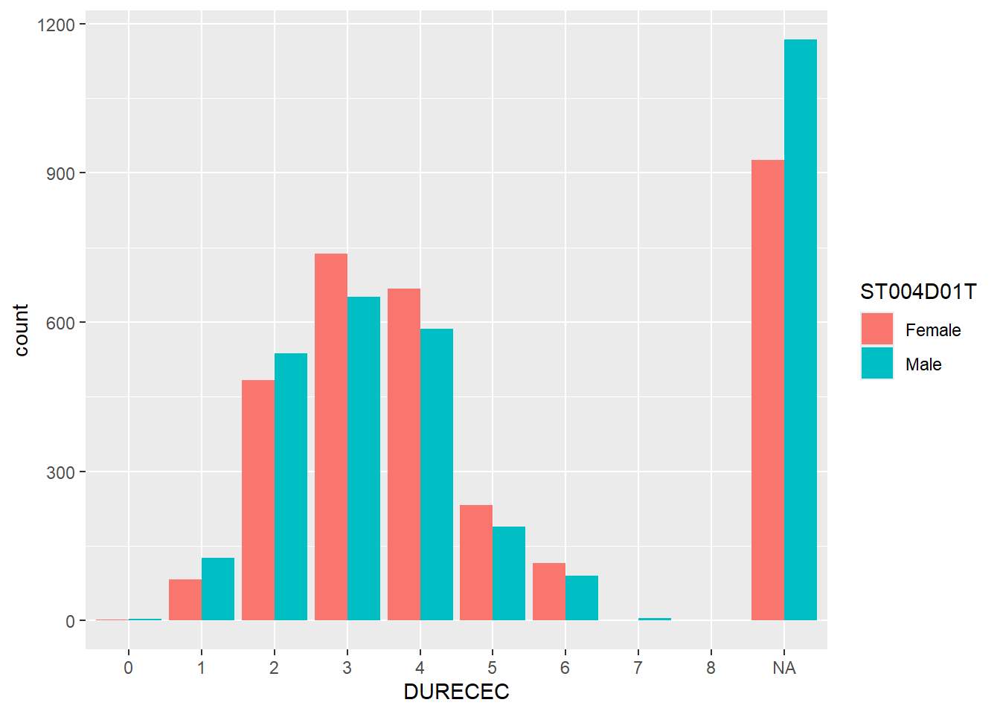
| Legend | Description |
|---|---|
| 0 | Attended ECEC for less than a year |
| 1 | Attended ECEC for at least one but less than two years |
| 2 | Attended ECEC for at least two but less than three years |
| 3 | Attended ECEC for at least three but less than four years |
| 4 | Attended ECEC for at least four but less than five years |
| 5 | Attended ECEC for at least five but less than six years |
| 6 | Attended ECEC for at least six but less than seven years |
| 7 | Attended ECEC for at least seven but less than eight years |
| 8 | Attended ECEC for at least eight years |
ggplot(stu_qqq_SG_select_analysis,
aes(x = ICTAVSCH, fill=ST004D01T))+
geom_bar(position ="dodge")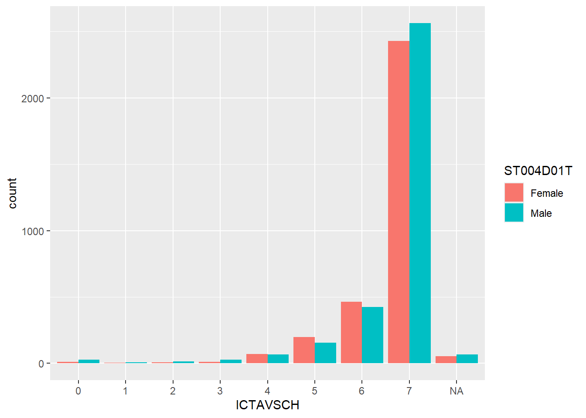
| Legend | Description |
|---|---|
| 0 | No ICT resources available at school |
| 1 | 1 ICT resource available at school |
| 2 | 1 ICT resource available at school |
| 3 | 1 ICT resource available at school |
| 4 | 1 ICT resource available at school |
| 5 | 1 ICT resource available at school |
| 6 | 1 ICT resource available at school |
| 7 | 1 ICT resource available at school |
2.4 Box Plots
ggplot(data=stu_qqq_SG_select_analysis,
aes(EXERPRAC, PV1MATH))+
geom_boxplot(alpha=0,aes(colour=ST004D01T))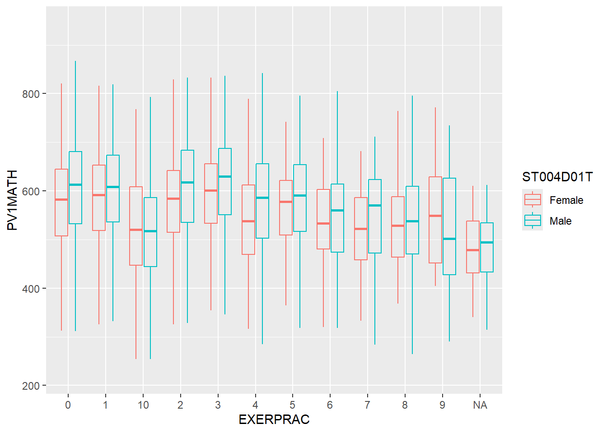
ggplot(data=stu_qqq_SG_select_analysis,
aes(STUDYHMW, PV1MATH))+
geom_boxplot(alpha=0,aes(colour=ST004D01T))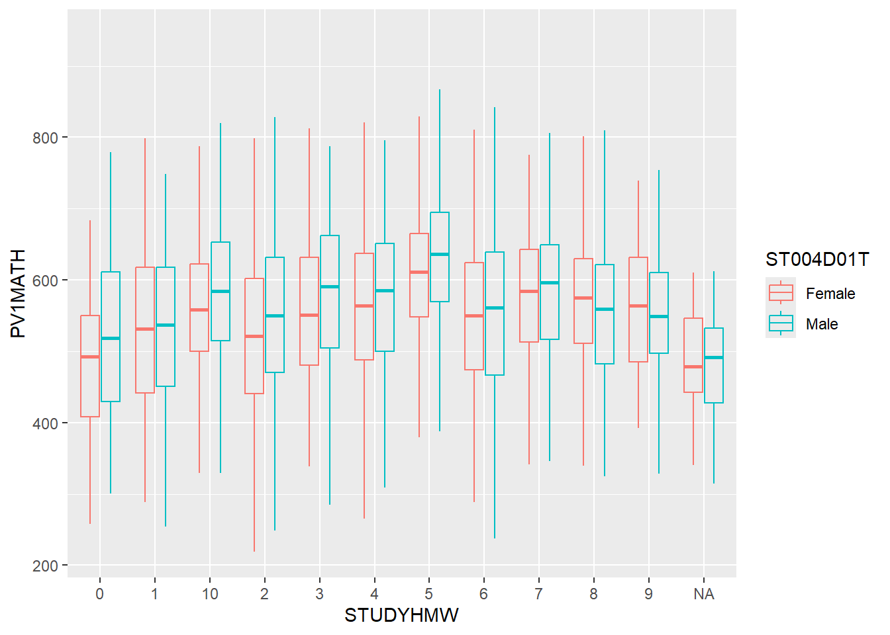
ggplot(data=stu_qqq_SG_select_analysis,
aes(WORKPAY, PV1MATH))+
geom_boxplot(alpha=0,aes(colour=ST004D01T))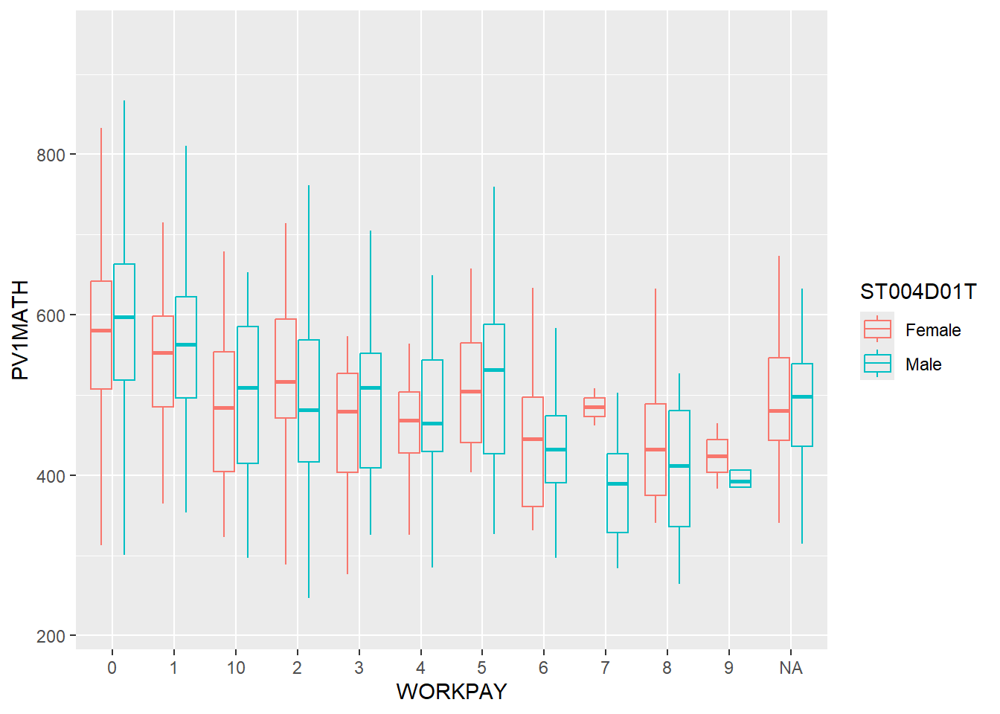
ggplot(data=stu_qqq_SG_select_analysis,
aes(DURECEC, PV1MATH))+
geom_boxplot(alpha=0,aes(colour=ST004D01T))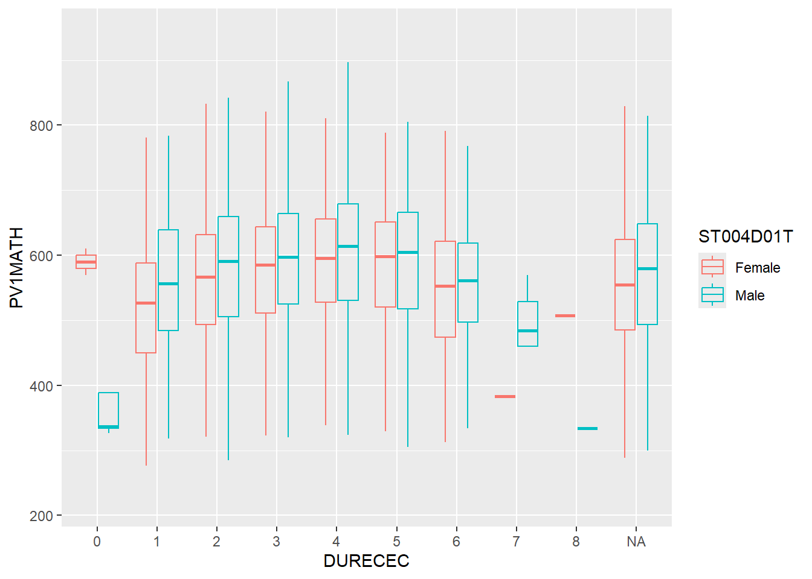
ggplot(data=stu_qqq_SG_select_analysis,
aes(ICTAVSCH, PV1MATH))+
geom_boxplot(alpha=0,aes(colour=ST004D01T))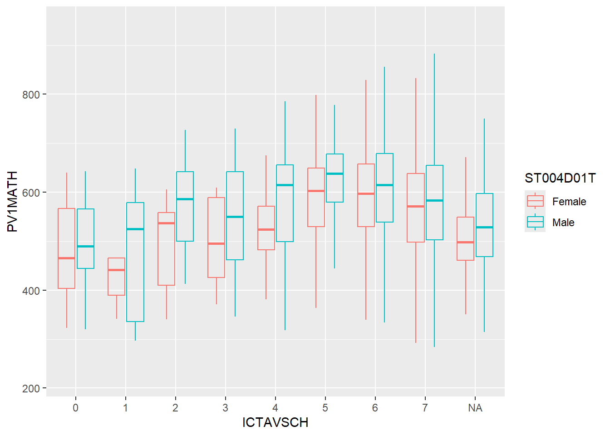
3: Summary
The analysis and study can be summarized in the various points listed below.
The distribution of performance between male and female in Singapore do not differ as much on a whole
There is a positive correlation between the Socioeconic Index (ESCS) and performance of students.
There is no discernible trend between increased exercises and performance.
There is a slight increasing trend when more time is spent studying or doing homework before or after school. More insights can be obtained if we can can compare between the length of each study and how it affects the performance of each individual.
There is a decreasing trend in performance when individuals spend more time working for pay.
There is no discernible trend between length of early childhood studies and performance. However, it is noted that males have a tendency of not performing as well when they do not have early childhood education.
There is a slight trend in increasing performance if the school has more infocomm technology available for the students. However, this information is insufficient as there is no measure on how often do students access these for learning.
References
Below are the matereials that were used as reference for the creation of this article:
https://patchwork.data-imaginist.com/reference/inset_element.html
The measure of socio-economic status in PISA: a review and some suggested improvements by Francesco Avvisati Published: 06 June 2020, Large-scale Assessments in Education volume 8, Article number: 8 (2020), Springer